Though it may be tempting to print tables and lists of intermediary data to the worksheet environment during a macro, it is more optimal, when possible, to use a programming structure called an array. To write from, read to, or loop through the elements of an array takes less time than to perform the corresponding operations using ranges of cells in the worksheet environment. Working with arrays will also help build transferable programming skills, since they commonly exist in other languages (though admittedly with greater capabilities than Excel), whereas a graphical interface to leverage as a hack for storing and processing data typically does not exist.
We’ll also look at some topics that integrate nicely with arrays, including some debugging tools and the Timer.
In Excel, an array is not a data type, but rather a container for data of a certain type. When declaring a 4x1 array of strings, the syntax is Dim MyArr(1 to 4) as String. When wanting to include a mix of data types as elements in an array, we declare it as type Variant. When declaring a two-dimensional array, let’s say a 4x2 Variant array, the syntax would be Dim MyArr(1 to 4, 1 to 2) as Variant. This creates an array of 4 rows and 2 columns.
At this point, I’d like to introduce a few features of the VB Editor: the Locals window, which displays existing variables and their values, the step-through feature, which lets you execute code one line at a time, and the break feature, which lets you execute code up until a certain point.
To open the Locals window, locate it under the View menu of the VB Editor. Now, as we step through code line by line, we will be able to view the variables. Next, we’ll create a macro which does nothing more than declare an array.
Sub CreateArray()
Dim MyArr(1 To 4, 1 To 2) As Variant
End Sub
Put your cursor within the macro, and press F8. The first line (the Sub statement) will highlight. Press F8 again and it will move to the next line, and so on. You should already see in the Locals window the existence of MyArr, which can be expanded to reveal 4 items, MyArr(1) through MyArr(4), each corresponding to a row of the array. Each of these elements can be expanded to reveal two items, corresponding to the two respective columns.
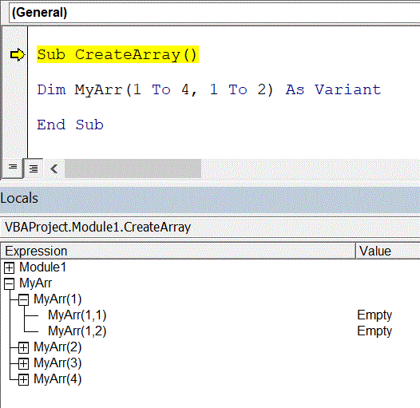
The Value column indicates that these elements are currently empty. To exit the step-through mode, you can either continue to press F8 until the macro is finished, or press the Stop (Reset) button near the menus at the top of the screen.
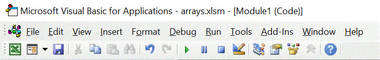
Reading from and writing to arrays is commonly done with a loop, though it is also possible to point to a continuous range of cells all at once. Below, I create a new macro, declare a Variant array like before, but give it 40 rows instead of 4, and populate each element with a random number between 0 and 100. I want to view the results in the Locals window, but I don’t want to press F8 for every line of execution, because the loop will repeat 40x2 times. So, I put a break on the End Sub line by clicking just to the left of the text (you can click on the red dot to remove it), and this will prevent the macro from executing completely, so that I can inspect the variables before they get destroyed.
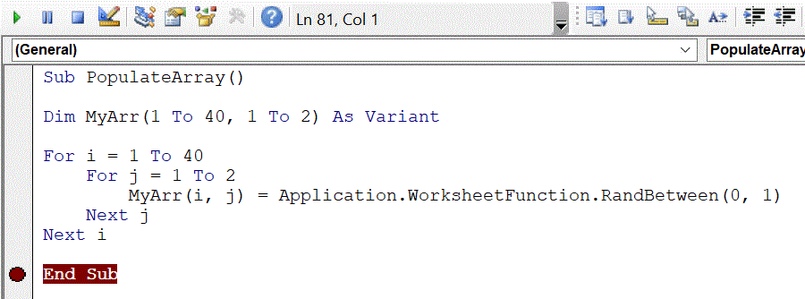
Now, with my cursor placed somewhere within the macro, I press F5 or the ‘Play’ button at the top to get the macro to execute up to the break point. After doing so, the array variable appears in the Locals window, this time with values populated.
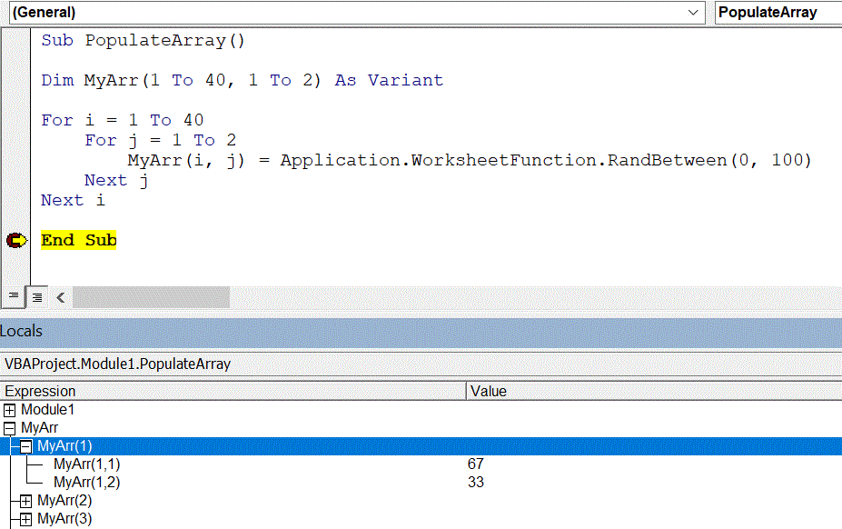
Next, I’ll expand this macro to print the random values to the worksheet after the array has been built. If the range I assign the array to is shorter or narrower in size than the array, only part of the array will be printed. For example, if I use Range("a1").Value = MyArr, then only cell A1 will populate, and with the value at the top-left of MyArr. If I use Range("a1:b2").Value = MyArr, then the top-left 2x2 patch of the array will be printed to those 4 cells. Below I choose range A1:B40, since it is a 40x2 array.

If I had attempted to print it to more rows or columns than exist in the array, then the additional rows or columns will show #N/A errors.
To read an array from cells, we can similarly refer to the entire block of cells at once, such as:
Sub ReadArray()
MyArr = Range("a1:b40")
End Sub
Note that this doesn’t declare the array, and if we do, then we must 1) set it to the Value property of the cells, and b) either do not declare the size, or set the size using a ReDim statement. So, the following will work:
Sub ReadToArray()
Dim MyArr As Variant
MyArr = Range("a1:b40").Value
End Sub
As will the following:
Sub ReadToArray()
Dim MyArr As Variant
ReDim MyArr(1 To 40, 1 To 2)
MyArr = Range("a1:b40").Value
End Sub
The ReDim keyword can be used to resize an array. It can only be used when the array is not dimensioned in its statement of declaration, such as in the below.
Dim MyArr() As Variant
ReDim MyArr(1 To 2, 1 To 4)
ReDim MyArr(1 To 20, 1 To 40)
The first line creates the variable, the second line resizes it to 2x4, and the next line resizes it to 20x40. Note that when this occurs, the array is recreated, and any data held in its previous iteration is lost. To preserve the data of the original array (and create blank elements to fill out the rest), we can use the Preserve keyword. However, Preserve adds a constraint that we can only adjust the last dimension, such as in the following:
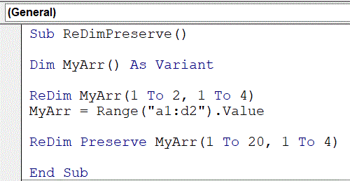
Had I tried to use ReDim Preserve MyArr(1 to 20, 1 to 40), or even ReDim Preserve MyArr(1 to 20, 1 to 4), then the result would be an error. To add rows to a multi-dimensional array in Excel VBA, you need to create a new array. When it is one-dimensional, however, the first column is the last column, and so you can freely ReDim and Preserve to add values to the list while preserving the old values.
You might be wondering, how do we get the size parameters of the array? When looping through one, for example, we do not want to have to hard-code the number of rows and columns. We can get this information through the LBound and UBound functions. The below creates a 1D two-element array and then uses a message box to show the lower and upper bound.
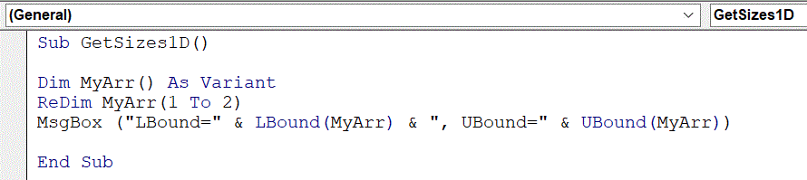
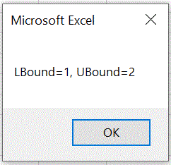
For a 2D array, pass a second argument to the LBound and UBound functions, indicating which dimension of the array to look at (1 for rows, 2 for columns). For example, I’ll create a 2x4 array and then capture the upper bounds of each dimension in a message box.
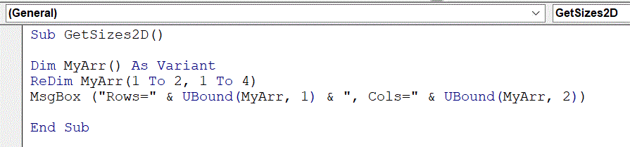
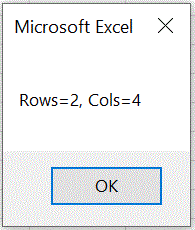
This assumes the lower bounds start at 1. Though I’m not sure why it would be practical, you could technically have the lower bound start at some other number that is lower than the upper bound. Therefore, a fully dynamic loop through a 2D array would look something like the following:
For i = LBound(MyArr, 1) To UBound(MyArr, 1)
For j = LBound(MyArr, 2) To UBound(MyArr, 2)
MyArr(i, j) = Cells(i, j)
Next j
Next i
For a speed comparison, I’ve generated a 20x4 table of random numbers in cells A1:D20, and will run and time two macros. The first will copy and paste the values in that table directly below the existing data, in a loop that will repeat 1000 times. The second will do the exact same, but store the data as an array and print it from that array, rather than performing the copy/paste operation.
To time a macro, we use the Timer function, which simply returns the current time (with a high degree of precision). I save the current time to a variable called stTime, let the code execute, and then save the current time tot a variable called endTime. The time it takes to execute is equal to the difference between the two. I set Application.ScreenUpdating = False so that screen updating does not add to the execution time.
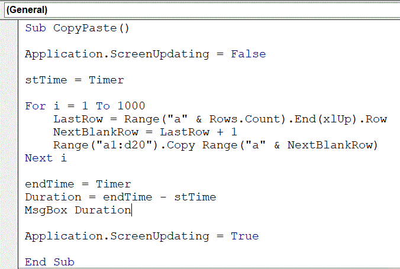
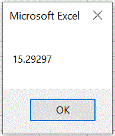
The result is 15.3 seconds, which would vary slightly from run to run. The macro which utilizes an array is as follows:
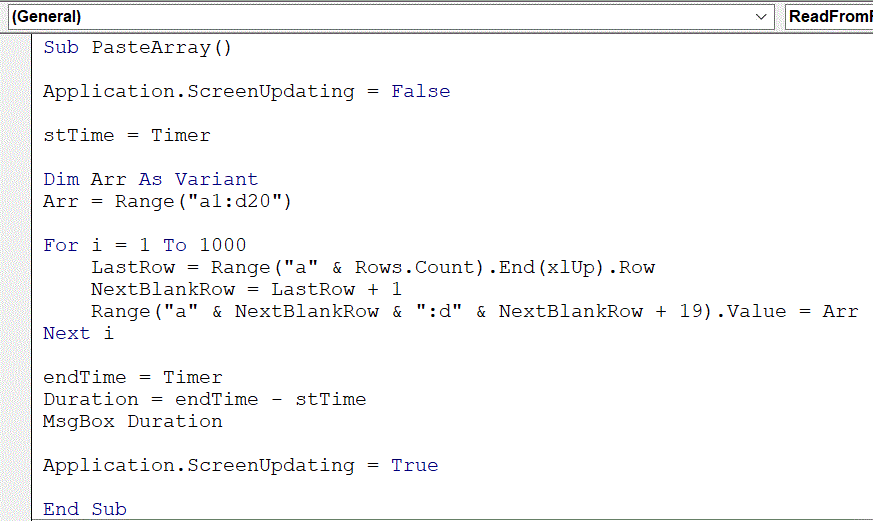
And the result – 0.3 seconds! Clearly the winner.

Conveniently, we can use Application.WorksheetFunction members on arrays, including Sum, Min, Max, and even Vlookup. Below I read in a 12x2 array where the first column is month numbers and the second column is month names, and then look up month #3 using the array, and display the result in a message box.
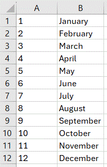
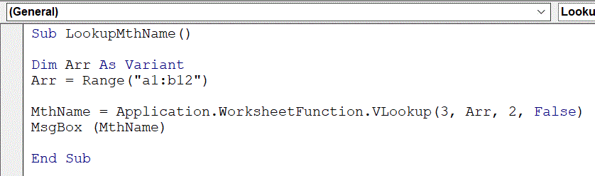